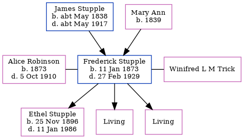

Frederick Stupple 1873 - 1929
[ Home ] | [ Calendar ] | [ Surnames Index ] | [ Errors ] | [ Family History ]A bootmaker and repairer and the child of James Stupple (a mariner) and Mary Ann, Frederick Stupple, the first cousin three-times-removed on the mother's side of Nigel Horne, was born in Herne Bay, Kent, England on 11 Jan 18731,2,3, was baptised there at Christ Church on 6 Apr 1873 was married twice - to Alice Robinson (on 26 Dec 1895 in Herne Bay) Winifred L M Trick (c. May 1919 in Blean, Kent, England, following the death of Alice Mary on 5 Oct 1910)5. He had 3 children with Alice Robinson: Ethel Mary Alice, Margery Ida and Winifred Lucy.
During his life, he was living at 10 Victoria Terrace in Herne Bay on 3 Apr 18811 and in 1891 (the same place as his parents had been living on 3 Apr 1881); at North Street in Herne Bay on 31 Mar 19016; at 22 Underdown Street in Herne Bay on 2 Apr 19117 - less than a mile from his cousin on his father's side Edwin Mount who was living at 3 Kings Road in Herne Bay, when he was living with his daughter Ethel Mary Alice, following the death of his wife on 5 Oct 1910 and in 1913; and at Cannon Cottage, 39 Bank Street in Herne Bay in 1929.
He died on 27 Feb 1929 in Herne Bay4.
Parents
- James was born c. May 1838
- Mary Ann was born in 1839
Children
- Ethel Mary Alice was born on 25 Nov 1896
Citations
- 1881 England, Wales & Scotland Census - Findmypast (was age 8 and the son of the head of the household)
- England & Wales births 1837-2006 - Findmypast
- Kent, Canterbury Archdeaconry baptisms 1538-1912 - Findmypast
- England & Wales deaths 1837-2007 - Findmypast
- England & Wales marriages 1837-2008 - Findmypast
- 1901 England, Wales & Scotland Census - Findmypast
- 1911 Census for England & Wales - Findmypast (was age 38 and the head of the household)
Media
1881 UK Census

Frederick Stupple - probate

1913 Kelly's Directory

England & Wales births 1837-2006 - BMD/B/1873/1/AZ/000531/054
Kent, Canterbury Archdeaconry baptisms 1538-1912 - GBPRS/CANT/B/96677483
England & Wales deaths 1837-2007 - BMD/D/1929/1/AZ/001389/103
1901 England, Wales & Scotland Census - GBC/1901/0006248860
1911 Census for England & Wales - GBC/1911/RG14/04357/0059/1
England & Wales marriages 1837-2008 - BMD/M/1895/4/AZ/000345/342
Kent, Canterbury Archdeaconry marriages 1538-1928 - GBPRS/CANT/M/97074082/1
Kent, Canterbury Archdeaconry banns 1754-1928 - GBPRS/CANT/M/94057040/1
1891 England, Wales & Scotland Census Transcription - GBC-1891-0005763925
England & Wales marriages 1837-2005 - BMD/M/1919/2/AZ/001386/067
Family Tree
Map
Generated by ged2site. Last updated on Jul 3, 2024
Known Issues
Residence record for 1929 contains no citation
Residence record for 1913 contains no citation
Residence record for 1891 contains no citation